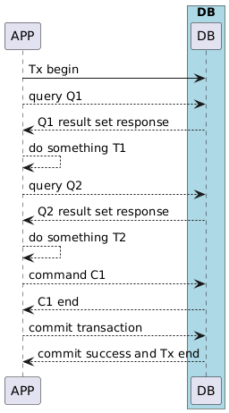

Mudu Procedure#
1. Design goals#
Mudu Procedure unifies interactive execution and stored procedures into a single, data-local programming model. Goals:
Data locality: execute business logic where data lives to minimize cross-worker communication.
Developer ergonomics: allow implementing procedures in modern languages and familiar sequential code patterns.
Safety and isolation: run user logic in a WASI sandbox and restrict access through explicit syscalls.
Performance: enable low-latency, high-concurrency workloads via async runtimes and per-worker affinity.
2. Interactive execution vs stored procedures — and the unified model#
Traditional interactive execution (REPL / client-driven) is immediate and flexible but often incurs remote calls and higher latency. Stored procedures are pre-deployed server-side code that run close to data but are typically constrained to specialized languages and deployment models.
Mudu Procedure unifies both:
Same procedure code can be invoked interactively from a client (ad-hoc call) or installed and invoked like a stored procedure.
The runtime supports fine-grained syscalls that let procedure code perform database operations without leaving the sandbox.
This means developers can prototype interactively, then publish the same code as a deployed procedure that runs with data locality and operational controls.
The following diagrams show the two execution models and how Mudu unifies them into a single WASI-based execution flow.
Interactive invocation (left): the client sends individual queries and commands, with network round-trips for each step.
Stored procedure deployment (right): the application sends a single request; all query execution, logic, and commit happen data-local inside the database runtime.


Both converge into a single WASI-based execution flow where procedures call syscalls and the kernel coordinates transaction and routing.
3. WebAssembly / WASI compilation and runtime#
Mudu compiles procedures to WebAssembly (WASI) modules and executes them inside a sandboxed runtime.
Why WASI?
Portability: WASI modules are platform-neutral and language-agnostic.
Sandboxing: the kernel controls syscalls and I/O surface to enforce safety and resource limits.
Tooling: many languages can target WASI, enabling multi-language support.
Typical toolchain flow:
Author procedure in a supported language (currently Rust examples exist).
Build/compile to a WASI module (wasm-ld / rust + wasm32-wasi target).
Optionally run through mudu-transpiler to apply color-bind transformations (see below).
Deploy the module (put the mpk/package into mpk_path) and register it with the kernel.
Invoke interactively or as stored procedure; the kernel handles syscalls, transactions, and routing.
The runtime exposes a compact syscall set (open session, get/put/range/query/command/batch, etc.). Procedures use these syscalls to interact with database state; all network and storage access is mediated by the kernel.
4. Multi-language support#
Unlike many traditional stored-procedure environments that bind to an embedded language (SQL/PLSQL/PLpgSQL), Mudu Procedure plans to support multiple high-level languages by targeting WASI.
Current supported implementation examples: Rust.
Future: other languages that can emit WASI modules (C/C++, Zig, AssemblyScript, Go (wasi support pending), and more).
This opens the door to leveraging modern language ecosystems, package managers, and developer tools while keeping execution safe and portable.
5. Color-bind async/await: language ergonomics and runtime#
Mudu adopts a “color-bind” model where asynchrony is a runtime feature rather than a mandatory language construct:
Developers write sequential, synchronous-looking code for clarity and maintainability.
The mudu toolchain (mudu-transpiler / compiler passes) rewrites or transforms blocking syscalls into async-compatible invocations (await points) as part of the build pipeline.
This is similar in spirit to Zig’s approach where the runtime can provide an async model while the source code remains simple.
Benefits:
Developer experience: write straightforward code without manual async state machines.
Runtime efficiency: the generated WASI module cooperates with the host async runtime (io_uring / Tokio) to achieve high concurrency.
The transpiler rewrites syscall calls into async syscall invocations under the hood so that the runtime can yield when waiting for I/O or remote RPCs.
6. Other considerations#
Debugging & testing: developer workflows include local WASI execution, unit tests, and interactive session debugging. The tooling aims to provide source-level debugging aids when possible.
Resource limits & quotas: the kernel enforces CPU, memory, and syscall quotas per procedure to maintain isolation.
Permissions & auditing: procedures are registered with metadata (owner, version) and can be limited via capability sets; auditing captures invocation and syscall traces.
Versioning & hot-swap: modules are versioned in the mpk packaging model; operator workflows support rolling deployment and graceful draining of sessions.
References & examples#
See the system call reference for
mudu_open,mudu_get,mudu_put,mudu_query,mudu_command, and more.See WebAssembly Integration for the component model and WASI sandbox.
See Application Packages for how to build and install an
.mpkpackage.See architecture diagrams in the docs (
/_static/procedural_tx.png) for visual flow between client, kernel, and worker.
End of Mudu Procedure overview (EN).